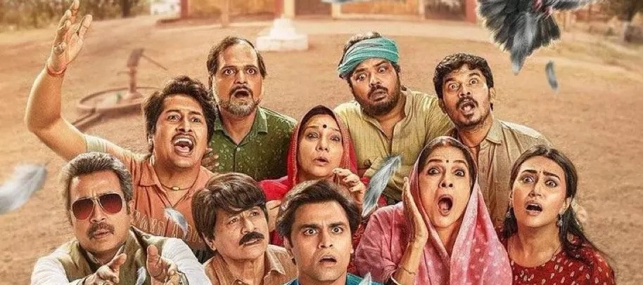
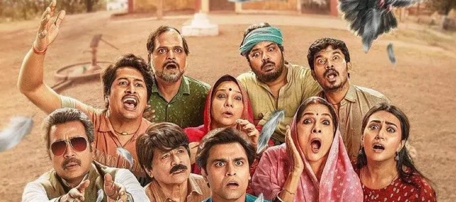

The third season of “Panchayat” opens up a new chapter, delving into the intricate politics and bureaucracy at the village level. The series portrays the transfer of Sachiv Ji, setting the stage for a story rich in themes of grief, community support, and unity.
Panchayat Season 2
The second season of “Panchayat” opens up a new chapter, delving into the intricate politics and bureaucracy at the village level. The series portrays the transfer of Sachiv Ji, setting the stage for a story rich in themes of grief, community support, and unity.
 
